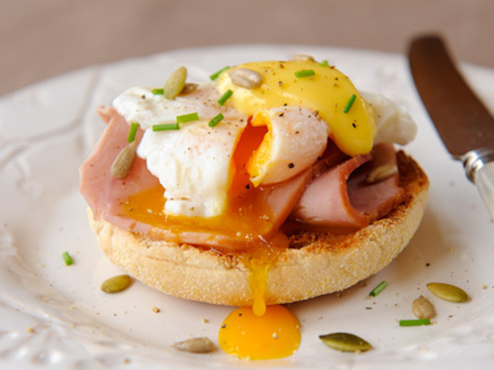

Recipe
Eggs
Benedict
By Yu Xue
Health and Yummy!
- Hollandaise Sauce
- Butter 150g
- Eggs 3
- Lemon half
- Salt/Pepper
- Melt butter on lowheat to make clarified butter.
- Boil small amount of water in a small pot.
- Then turn down the heat after boiled to remain simmering.
- Separate egg yolks from egg whites and put into a container.
- Then set the container on top of the simmering pot, squeeze half a lemon in, and beat the egg yolks as fas as you can to achieve a thickening texture.
- Remove container from pot immediately when reached the texture.
- Little by little add clarified butter and mix gently. Add appropriate salt and pepper.
- Eggs
- English muffins 1/split in half
- Hollandaise Sauce 80g
- Spinach
- Bacon/Smoked Salmon 2slices
- Eggs 2
- Salt/Pepper
- Butter
- White Vinegar(optional)
- Saut'e Spanach leaves with butter.
- Roast muffins with butter in a separatepan until crispy and golden brown.
- Boil a pot of water with white vinegar(3:1).
- Swirl the water. Poach the eggs in the center of the swirl when water boils.
- Boil for 4-5 minutes and take out immediately into a nice bath.
- Sear bacon or take out two pieces of salmon.
- Dren the plate in the order of muffins, bacon/salmon, spinach, eggs, Hollandaise sauce.
Congratuation!